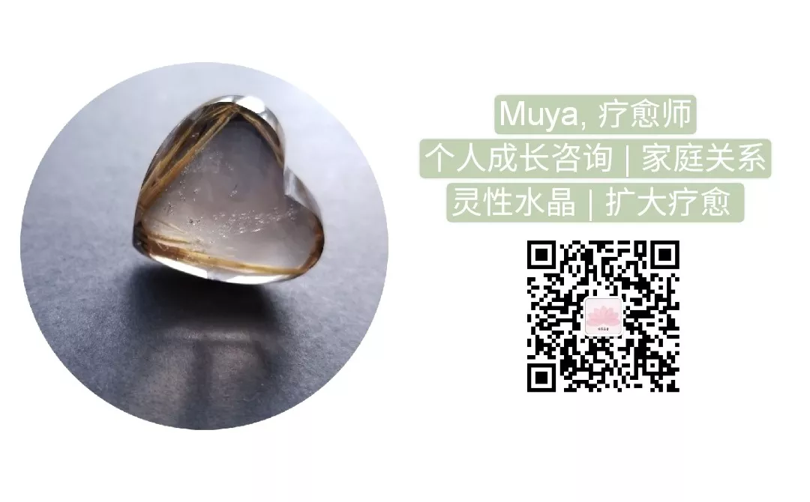

塔罗解读服务
Muya 南园晶舍南园晶舍
微信号：gh_512c07fa4640
功能介绍：为大地母亲祈祷 2021-07-10 00:52
原文链接(长) 原文链接(短)
关于塔罗牌的真实起源，已难以考证。普遍流通的说法是，塔罗起源于十五世纪的意大利宫廷游戏牌卡，经过各种神秘学与宗教力量的影响而形成了今天的模样。不过这种缘起说法我本人并不认同。在《塔罗冥想》这本研究基督信仰隐修传统的书里，作者认为塔罗的诞生是有神圣的宗教意义的，其宗旨就是为了昭示人类的灵性进化之路。大阿卡纳的二十二张牌是人类的灵性进阶指引，从纯真的“愚人”到圆满的“世界”，塔罗为人类展示了灵性成长的艰难跋涉。
早期的塔罗牌只有符号与数字，使用者完全依据对神秘学的深厚理解来使用它。而在1910年左右，顺应西方心理学与神秘学合流的浪潮（与荣格同时代），韦特先生和史密斯女士创造了今天的韦特塔罗，为每张牌绘制了一幅非常具象的画面来描述牌卡所寓意的情境，这些图画赋予了塔罗更易被理解的特性，也让使用塔罗牌不再是一件特别深奥古老的巫术，它像心理学中使用到的测试图像，不同的图案唤起人们内心深刻的感受，甚至是将潜意识的活动浮现水面。
使用塔罗牌来解读生命的实相时，这些画面与当下情形的一致会产生惊人的共时性。对这种共时性的领悟，是可以进入深刻的精神领域，而获得灵启的。当牌卡被揭开，看到画面的一刹那，人所产生的“这就是当下我正在经验的”感受，是一次灵启的门户，借由此，人们开始意识到自身存在与神性不可分割的关系。有时，神圣存有也借由塔罗画面，赐予人们深深的祝福。
在现代社会，塔罗因其易学难深的特性，成为了非常流行的占卜工具，人们走在大街上可能会看到很多塔罗占卜的店铺。塔罗在现代社会经历了自它诞生以来最沉重的一次降维，但也因此更容易流通和具备实用性，与此同时，也削弱了塔罗对于心灵的揭示意义，以及人们经由塔罗获得灵启的奥义。如果想要回到塔罗最深刻、最具有灵性意义的画面中，我们需要放下对塔罗的流行性预设，真诚地将之视为与神圣意志对话的工具，继而获得塔罗向我们展示的、关于实相的惊鸿一瞥。
塔罗解读服务所涵盖的
- 在一个复杂的处境中，借由塔罗，厘清自己的真实需求、状态，以及周围人事存在的真实性，获得如何正直行事的启迪。
- 在一段关系中，借由塔罗，了解自己与他人关系的本质、障碍与出路。
- 在面临选择时，借由塔罗，昭示不同选项背后的意义是什么，自身最真实的渴望是什么。
- 在所有纷繁的事物中，借由塔罗，呈现不同事物真实的能量状态，获得对真相的感知。
- 在迷茫与裹足不前时，借由塔罗，看清自身状态，获得关于生命方向的启示。
无法帮助和回答的问题
- 不回答关涉他人隐私的问题。例如：用塔罗来看另一个不在场者的事情。
- 不作未来运势的预测。例如：下季度的财运、桃花等等。
- 不回答不可撤销之事。如果一件事，已经势在必行，或者你已经下定决心去做，恕不能提供结果预测，以免干扰行事的心智。例如：下周考试会不会通过。
- 不回答健康与生死问题，兹事体大，从医为宜。
- 不回答找人、找物、找走失的猫狗等等，这类求助在塔罗不是强项。
解读费用：300元
解读者简介
Muya，疗愈师，从事过心理咨询工作，目前专注灵性疗愈、水晶、塔罗解读与教学。
